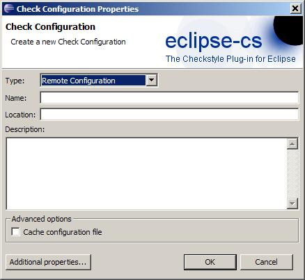

You need to provide a unique name for the configuration, the plugin will generate a file name on its own and store the configuration file within the plugins state location inside the workspace.
Since the 4.0.0 release the Checkstyle Plug-in uses plain Checkstyle configuration files. For easier reuse of existing Checkstyle configurations and to support some common use cases different Configuration types were introduced into the plug-in. The following section explains the existing configuration types:
Built-in configurations come shipped with the plug-in (or an
extending fragment). They can not be edited nor deleted.
You can create an own
configuration based on a built-in (or any other) configuration by copying the
configuration.
Built-in configurations cannot be created by the user but can be
added through a fragment which extends the plugin.
Please read here for more info.
Internal configurations are stored within the Eclipse metadata. Use
an internal configuration if you don't want to manage the location of your
configuration by yourself.
You need to provide a unique name for
the configuration, the plugin will generate a file name on its own and store the
configuration file within the plugins state location inside the workspace.
An existing Checkstyle configuration file can be imported into the internal configuration
by using the Import... button. Note that this will overwrite the existing setup
for this configuration.
If you ever need the configuration file outside the
plug-in use the export functionality.
Internal configurations can be edited and deleted (which will also delete the Checkstyle configuration file).
Use this configuration type if you have a Checkstyle configuration
file outside of an Eclipse workspace in your file system.
The External
Configuration just points to this configuration file and uses it from its location.

You need to provide a unique name for the configuration together with
the full absolute path to the Checkstyle configuration file.
Relative paths are
not supported, but there is support to make the absolut path a bit dynamic to allow
differing absolute paths on multiple developer machines.
To do this use
${property} style pattern(s) in the location string, these patterns will be
resolved from equally named Classpath Variables or Environment properties (passed into
Eclipse via -D parameter).
External configurations can by default be edited if the configuration file is
writable.
If you have a carefully crafted configuration file (with nice comments
and all that) - which you don't want to "destroy" accidently by using the configuration
editor - you can use the Protect Checkstyle configuration file
option.
When enabled the configuration editor will not touch your file even if
it is write enabled.
If you delete an External Configuration from the plug-in
the external configuration file will not be deleted.
This configuration type can be used if you want to publish your
Checkstyle configuration on a web server and have all developer in your company use it.

As usual a unique name must be provided together with the URL of the
Checkstyle configuration file.
If the webserver requires HTTP basic
authentication a popup dialog will request the credentials input.
Optionally you
can let the plugin store the password, which will be stored in the Eclipse
keyring.
While this offers a reasonable level of security it is not impossible
to crack.
For the travelling consultants out there - the Cache configuration file option
is for you.
When your company has deployed the Checkstyle configuration file on
an internal server which is of course not reachable when away at a customers site, using
this option will tell the plugin to cache the configuration file once it is
reachable.
When the configured location is not reachable anymore the plugin will
use the cached configuration file.
This allows you to use the same Checkstyle
configuration On- and Offsite.
A Remote Configuration can not be edited but can be removed from the plug-in.
If you have your Checkstyle configuration file inside a project in
your workspace the easiest thing is to use the Project Relative Configuration.

Like always a unique name must be provided along with the relative path
consisting of project-name/relative-path-in-project.
Using the
Browse... button you can easily select the configuration file from a
project.
A Project Relative configuration can be edited using the Configuration Editor when the
configuration file is writable.
Like with External Configuration type the
configuration file can be protected from accidently rewriting it with the Configuration
Editor.
When a Project Relative configuration is deleted the Checkstyle
configuration file remains untouched.